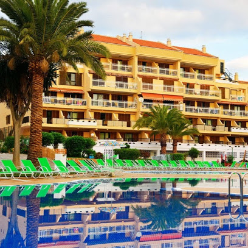
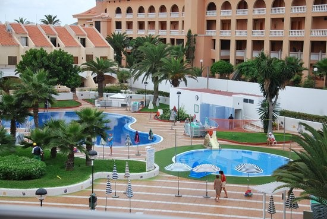

Het strandhuisje
Welkom bij het Strandhuisje! Moderne, net gerenoveerde studio's te huur voor een juiste prijs. Wij beschikken over 4 verschillende studio's, drie studio's voor 2 personen en één studio voor 4 tot 6 personen. De studio's zijn bijzonder goed gesitueerd, met een uitzicht op één van de weinige zandstranden op dit vulkanische eiland. Het centrum van playa de las Americas ligt direct achter het complex. Omdat wij enkel vier studio's verhuren kunnen wij een goede service garanderen. In elke kamer wordt elke dag gepoetst en u kan vragen aan de schoonmaakster om uw kledij te wassen. Verder bieden wij in elke kamer gratis wifi en enkele Belgische en Nederlandse tv-zenders.
Het complex en haar faciliteiten
Het strandhuisje maakt deel uit van een groot complex genaamd “Compostela Beach”. Dit prachtige 3 sterren complex beschikt over een groot zwembad en een overschaduwt kinderbad omringd door een ruim zonneterras met uiteraard voldoende ligbedden en parasols waarvan u gratis gebruik kan maken. Verder heeft het complex haar eigen bar, wasserette, gamesroom, supermarkt en kinderclub en -disco. Er is zelfs een pooltafel.
Tenerife
Ligging
Tenerife is het grootste eiland van de Canarische Eilanden, een tot Spanje behorende eilandengroep in de Atlantische Oceaan. Het eiland is van vulkanische oorsprong, deze vulkaan is een zeer aanbevolen bezienswaardigheid.
Bijkomende informatie
Vanuit België of Nederland vliegt u tussen de 4 en 5 uur. De vlieghaven “Tenerife Sud” ligt op een kwartier met de taxi van het strandhuisje. Op Tenerife is het altijd één uur vroeger dan in Nederland of België. De prijzen in Tenerife liggen iets lager dan in België en Nederland maar u kan gewoon met euros betalen.
Weersomstandigheden
Tenerife staat bekend om haar aangename klimaat, vooral in het Zuiden, waar Playa de las Americas gelegen is, is het vrijwel het hele jaar droog en zonnig. Hieronder vindt u de klimaatgegevens van de zuidkust van Tenerife. Landinwaarts is het overwegend koeler, grijzer en natter.
| Tenerife | Gem. max. temperatuur (℃) | Gem. min. temperatuur (℃) | Gem. neerslag per maand (mm) |
|---|---|---|---|
| januari | 20 | 15 | 61-100 |
| februari | 20 | 14 | 31-60 |
| maart | 21 | 15 | 31-60 |
| april | 22 | 16 | 31-60 |
| mei | 24 | 18 | 6-30 |
| juni | 25 | 20 | 0-5 |
| juli | 28 | 21 | 0-5 |
| augustus | 29 | 22 | 0-5 |
| september | 27 | 21 | 6-30 |
| oktober | 25 | 19 | 31-60 |
| november | 22 | 17 | 61-100 |
| december | 21 | 15 | 61-100 |
|
Bron: www.klimaatinfo.nl |
|||
Missie en visie
Onze Missie
Onze missie is onze huurders een zo prettig mogelijk verblijf bezorgen en ervoor zorgen dat zij zeker eens terug willen komen. Met onze goede ligging zorgen we ervoor dat de toeristen zowel zicht op het strand als op het bergachtige landschap hebben. Doordat het verblijf het hele jaar open is kunnen de huurders ook in de winter genieten van de zon. Met behulp van deze site willen we er voor zorgen dat de klanten geen tijd verliezen aan het plannen van hun reis door de dichtstbijzijnde bezienswaardigheden en eetgelegenheden reeds te presenteren. Hierdoor kunnen ze optimaal genieten van hun vakantie.
Onze visie
Wij streven voor een goede service en prijskwaliteit. Een vakantie zonder problemen is de beste vakantie.